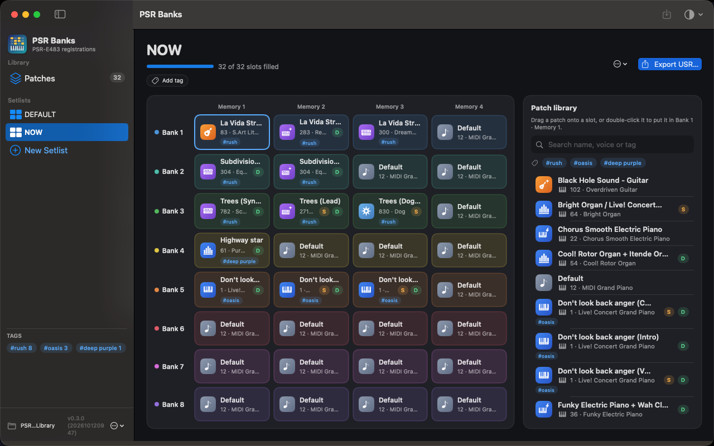
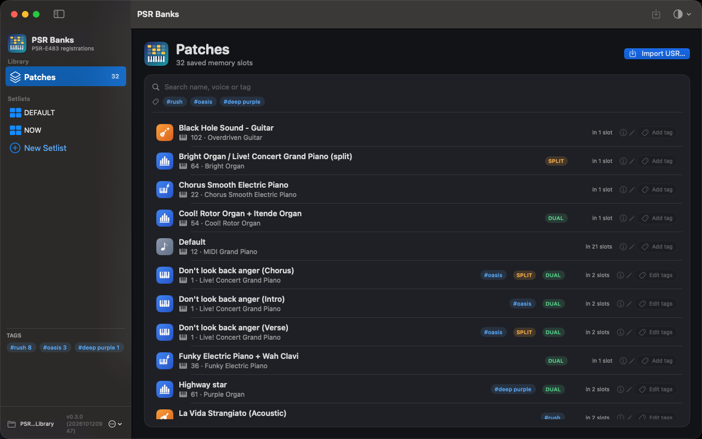

Keep every patch you've ever made in one library, assemble setlists of 8 banks × 4 memories, and export a valid USER00x.USR file for your keyboard.

The keyboard stores 32 registration memories per file. PSR Banks splits them into individual patches so you can mix and match across songs and gigs.
Import any .USR file and every memory becomes a patch you can name, tag, give an instrument icon and inspect.

Drag patches from the library into bank slots. Copy, cut and paste between slots, and fill the gaps with a default patch.
Importing a file and exporting it again gives back exactly the same bytes, checksum included. The test suite proves it against real files from a PSR-E483; two are in the repo under Examples/.
PSR Banks ships as an ad-hoc signed build through a Homebrew cask. Requires macOS 14 or later.